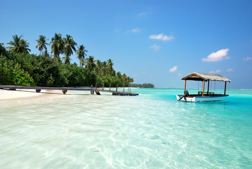

Maldives is a republic in Asia. There is about 401 000 residents there and it has 300 km² areal.The Maldives is the Earth's flattest and lowest land. More than 80 percent of the land area is lower than 1 meter above sea level.The development of a modern tourism industry began in the 1970s, and is today the country's largest industry.

After tourism, fishing is the most important industry; most tuna is fished, which is exported both fresh and canned. Only 13 percent of the land area is arable; sweet potatoes and millet are grown, among other things. The population is largely dependent on food imports.
Snorkeling Safari
Explore three popular snorkeling spots in the Maldives on this snorkeling safari from Malé. Travel by speedboat from Hulhumale, then hop in the water with your snorkel guide to explore the underwater seascape. Use of snorkel equipment included.
Sunset Fishing Trip
Guest can enjoy beautiful sunset & this tour includes fishing gear & bait-fish. Our tour leader will help you for fishing & teach you the techniques. Enjoy the fun of Fishing in the Maldives. You can add BBQ Dinner with additional USD25 per person.
Barbecue Dinner
A barbecue dinner at the Maldives is unarguably the most fulfilling experience and a must try. Feel the magic of the Maldivian cooking while feasting on freshly grilled fish held under the stars surrounded by the relaxing sound of gentle waves.
All the information/facts is taken from :
Images:
NB!: I know sources was not apart of the website, but i decided to include it since the text and images are not mine